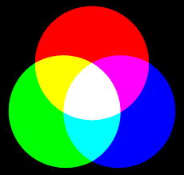
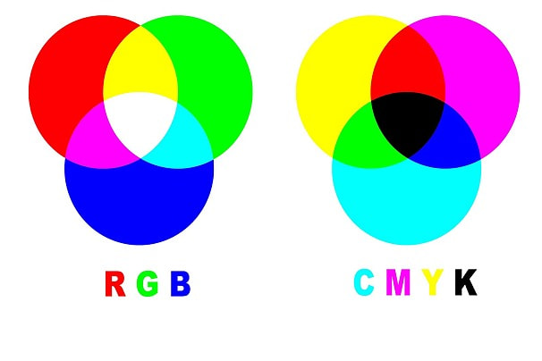

Modelo RGB (Aditivo)
"RGB" é a abreviação do sistema de cores aditivas formado pelos tons de Vermelho (Red), Verde (Green) e Azul (Blue). O propósito principal do sistema RGB é a reprodução de cores em dispositivos eletrônicos como monitores de TV, computadores, mídias digitais, celulares em geral. Ele é um padrão de cor que utiliza luz para gerar cores.
Funcionamento dos Pixels e subpixels
Cada pixel de uma tela é composto por três subpixels: vermelho, verde e azul. A variação da intensidade de cada um forma diferentes cores.O pixel é a menor unidade de uma imagem digital. Esse termo vem da contração da expressão “picture element” que significa “elemento da imagem”, em inglês). Ou seja se visualizarmos uma imagem com alto índice de aproximação, é possível identificar pequenos quadrados coloridos nela, que, somados, formam o desenho completo. Em uma foto digital por exemplo, verá que ela é formada por vários quadradinhos, os pixels. A cor de cada pixel é fruto da combinação das cores básicas: vermelha, verde e azul citadas acima onde cada uma dessas três cores possui 256 tonalidades, da mais clara à mais escura, que, combinadas, geram mais de 16 milhões de possibilidades de cores. Os pixels são agrupados em linhas e colunas para formar uma imagem. As cores Vermelho (Red), Verde (Green) e Azul (Blue) conhecidos no mundo das artes como “cores primárias”, já que se combinam baseadas na reflexão e absorção de fótons (minúsculas partículas elementares contidas na luz) visto que o RGB depende da emissão de fótons de um componente excitado a um estado de energia mais elevado.
Modelo CMYK (Subtrativo)
O nome CMYK é uma abreviação das cores ciano(C), magenta(M), amarelo(Y) e preto(K) .O sistema de cores CMYK é uma cor pigmento. As cores pigmento, como o nome diz, são formadas de pigmentos que quando sobrepostos tendem a ficar cada vez mais escuros. Isso acontece porque a cor que vemos é apenas um reflexo da luz que incide sobre o pigmento, e uma vez sobrepostos esses pigmentos refletem menos luz, até haver uma ausência total dela, que é o preto. Essas quatro cores, são as mais importantes no mundo da impressão gráfica. Assim, o CMYK trata-se na verdade de um sistema de cores utilizado para impressão no mundo todo. Ele é usado em indústrias de impressão de revistas, jornais, livros, camisas, convites, faixas, entre outros materiais impressos. Podemos afirmar aqui, que as cores CMYK são a melhor alternativa quando o projeto for direcionado para impressão.
Comparação: RGB vs CMYK
O modelo RGB é aditivo, pois adiciona luz para criar cores. O CMYK é subtrativo, pois remove luz refletida para formar cores. RGB é ideal para telas, enquanto CMYK é mais eficiente para impressões.
